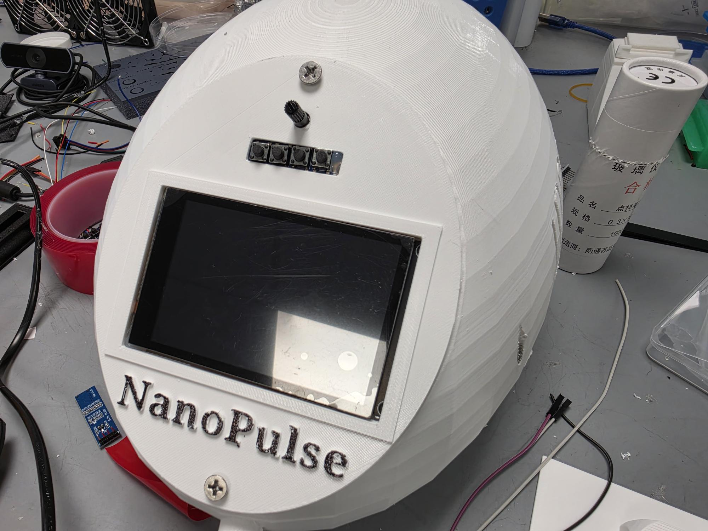
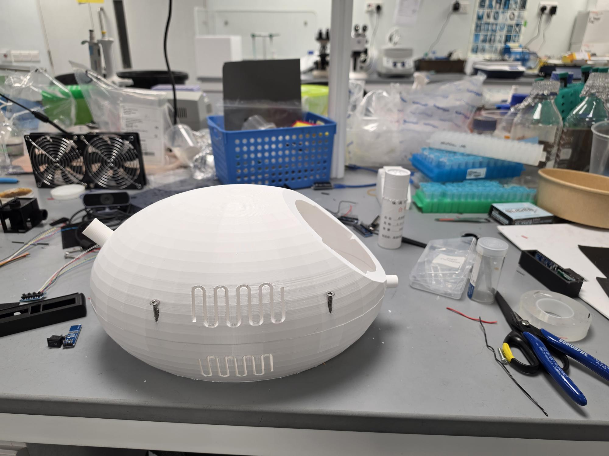
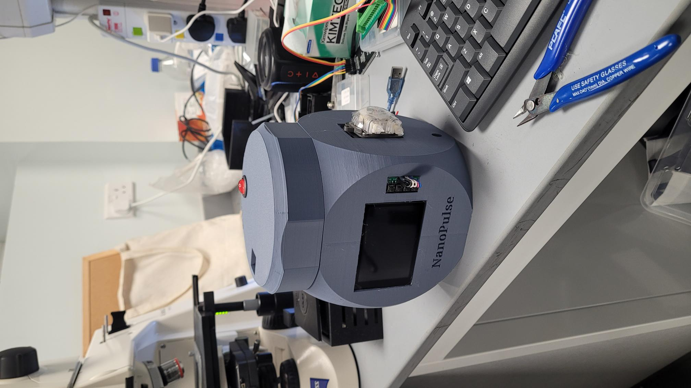
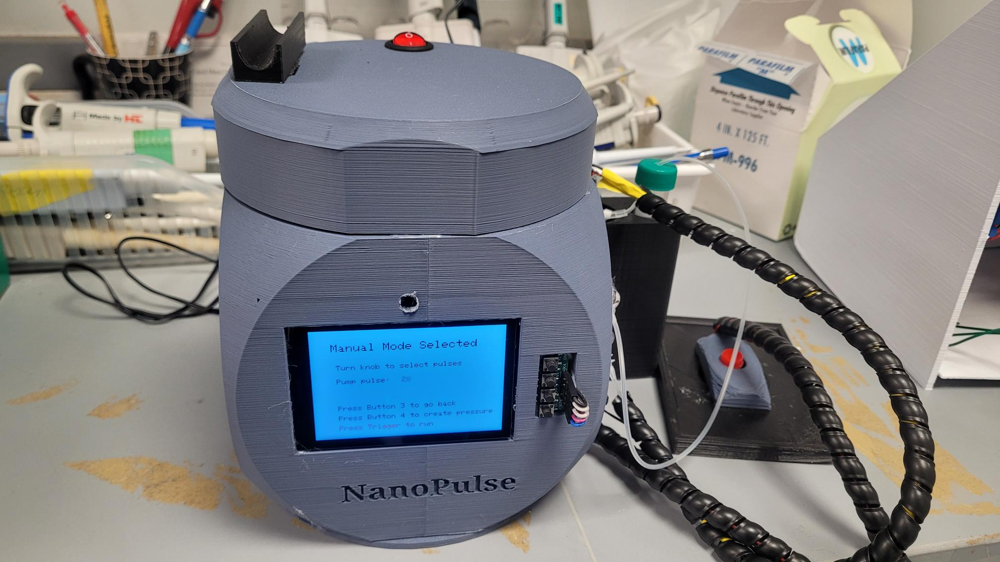
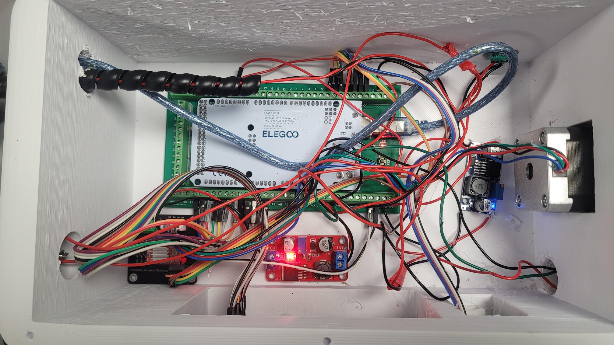
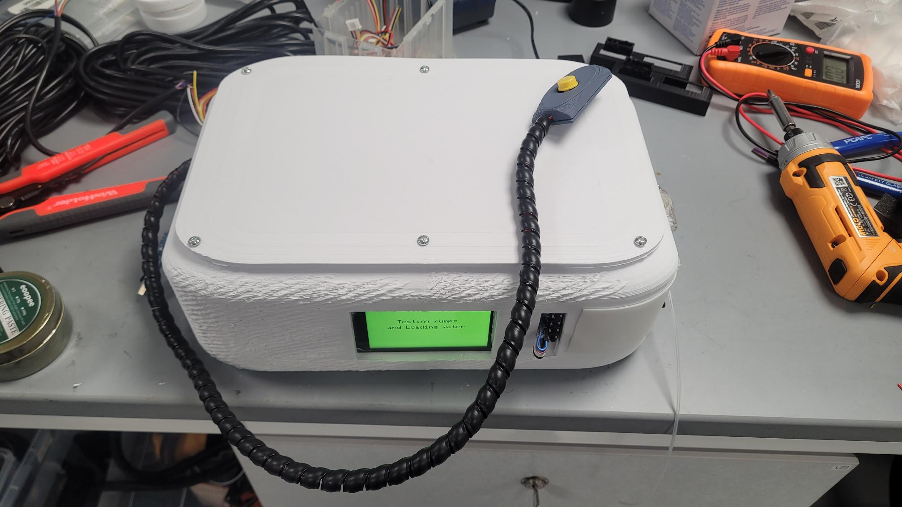

A gallery documenting the design, assembly, and deployment of the NanoPulse microinjector system. The NanoPulse is a custom-engineered microinjector system designed for high-precision fluid delivery and delicate biological sample manipulation. Enclosed in a robust 3D-printed chassis, the device integrates microcontroller-driven logic and mechanical actuation to generate highly consistent, micro-scale pressure pulses. It features an intuitive front-panel interface that allows researchers to finely tune both pressure and injection pulse durations. Designed for seamless integration with laboratory micromanipulators, the NanoPulse provides a compact, cost-effective, and highly controlled solution for exacting benchtop injection protocols.

A fully assembled NanoPulse microinjector setup (v3.0), designed for high-precision biological sample manipulation and fluid delivery.

Close-up of the 3D-printed chassis designed to securely house the microcontroller and pneumatic systems.

A fully assembled NanoPulse microinjector setup (v2.0).

Closer look at the NanoPulse microinjector setup (v2.0).

Electronics of the first version of NanoPulse designed by Jay and Jeff.

Assembled NanoPulse model 1.